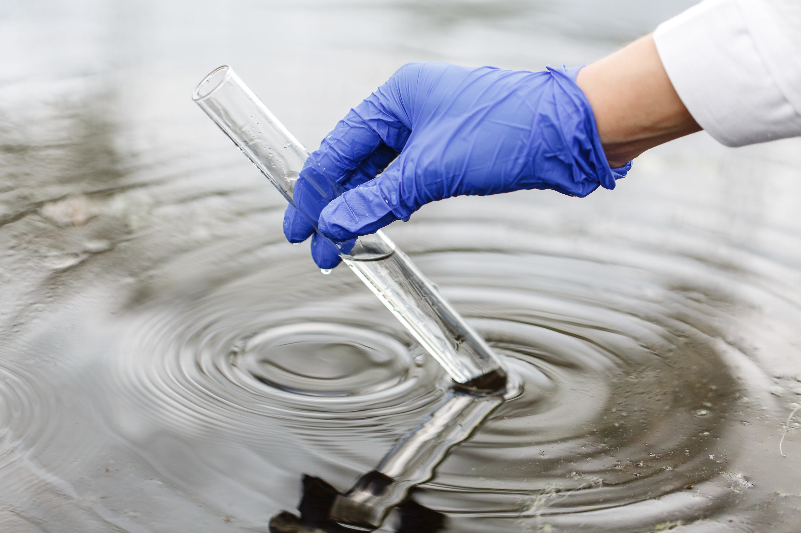
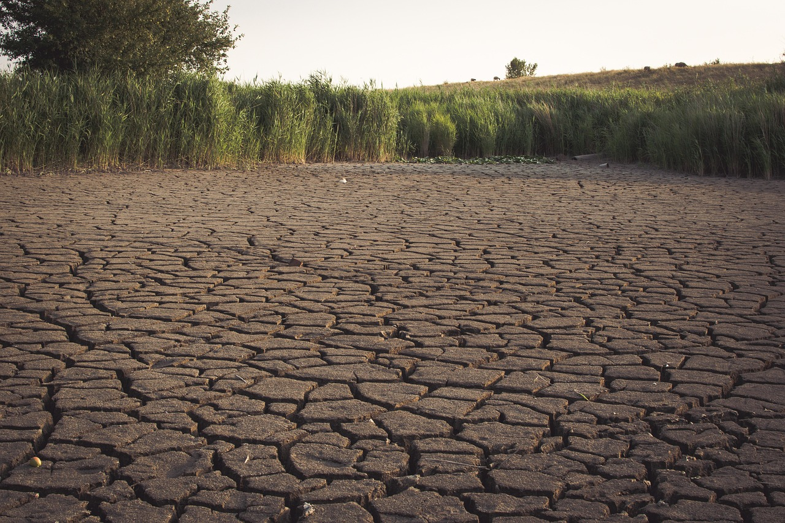
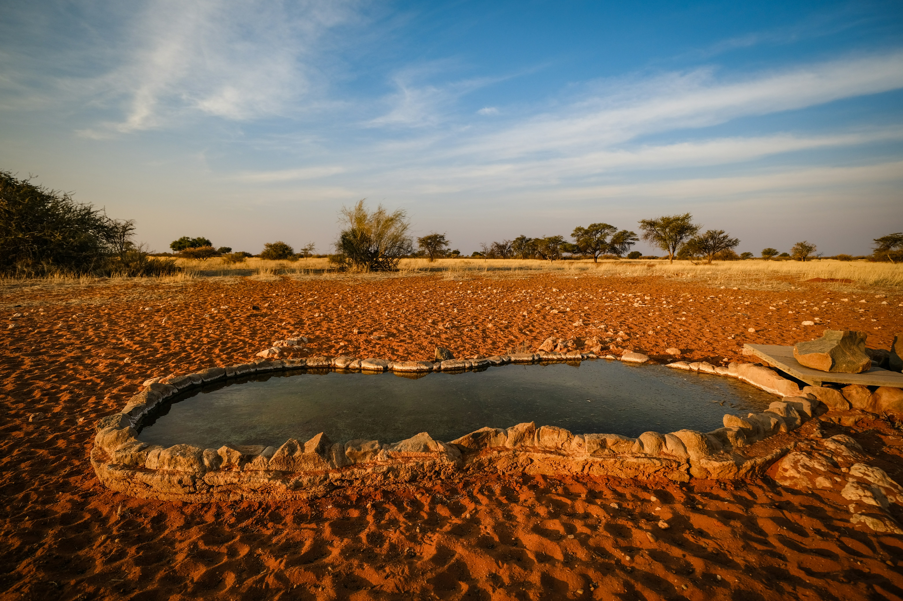
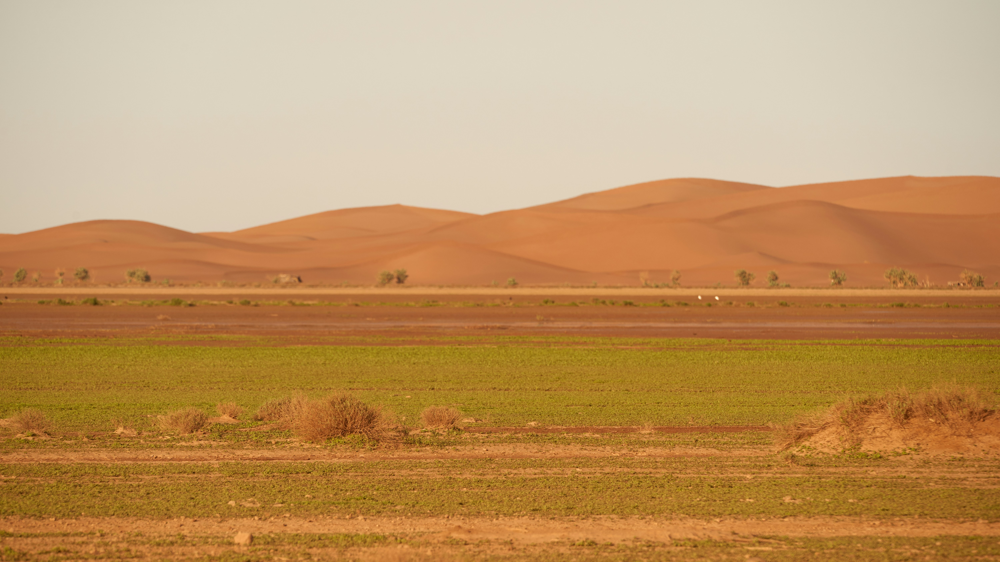
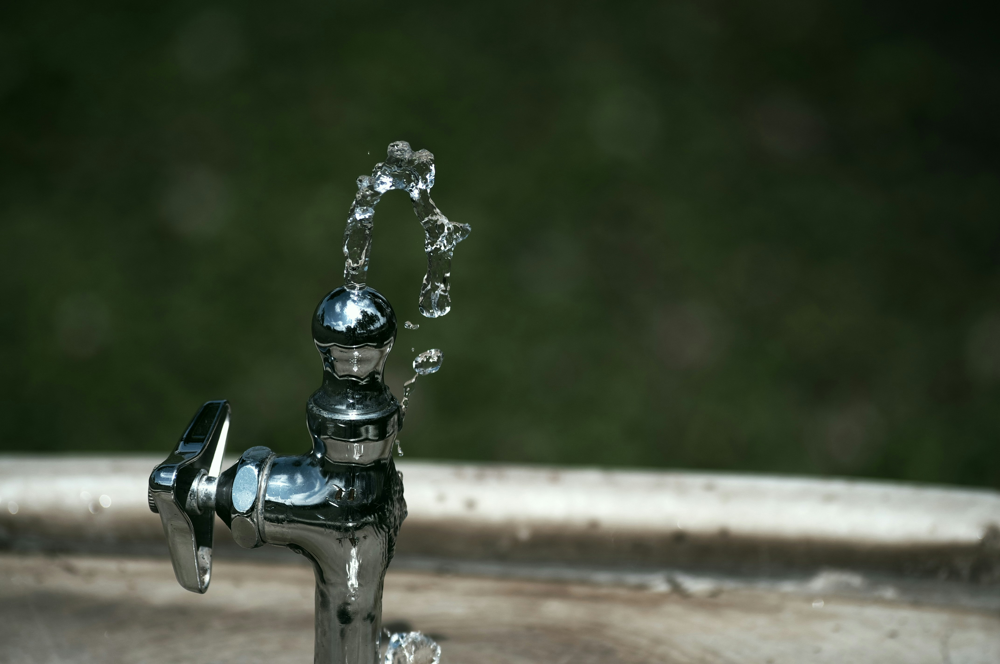
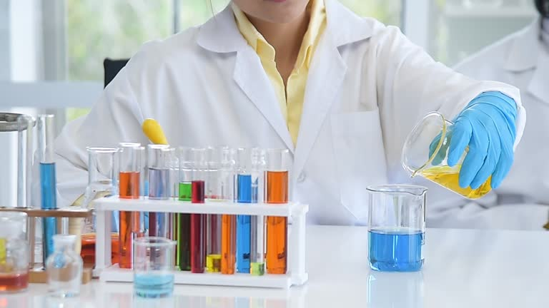
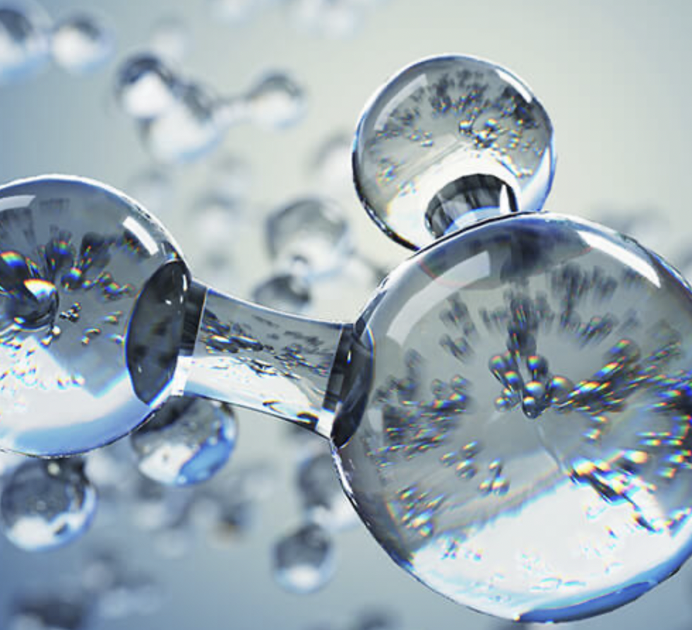
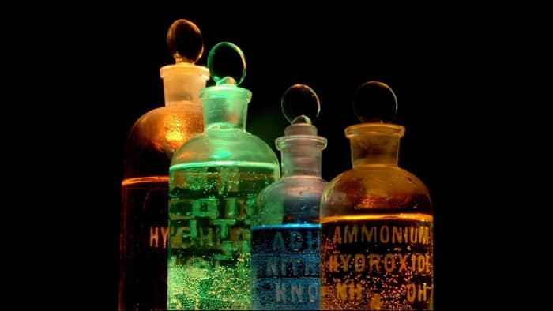
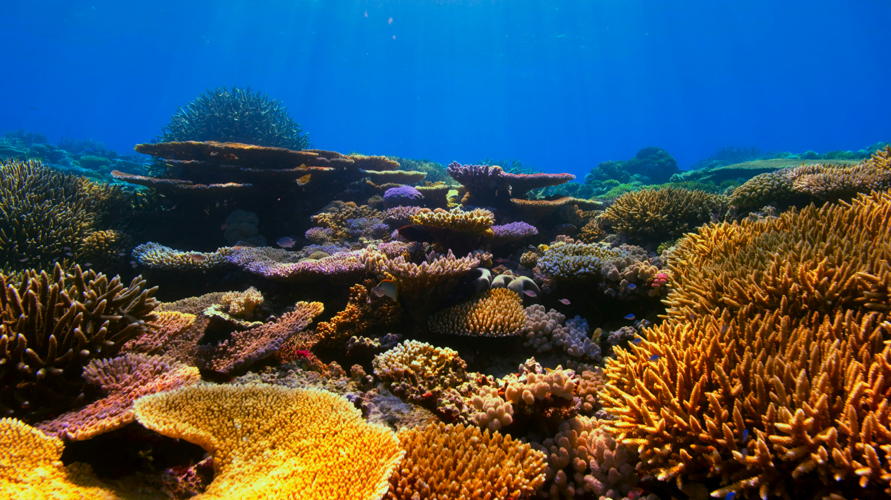
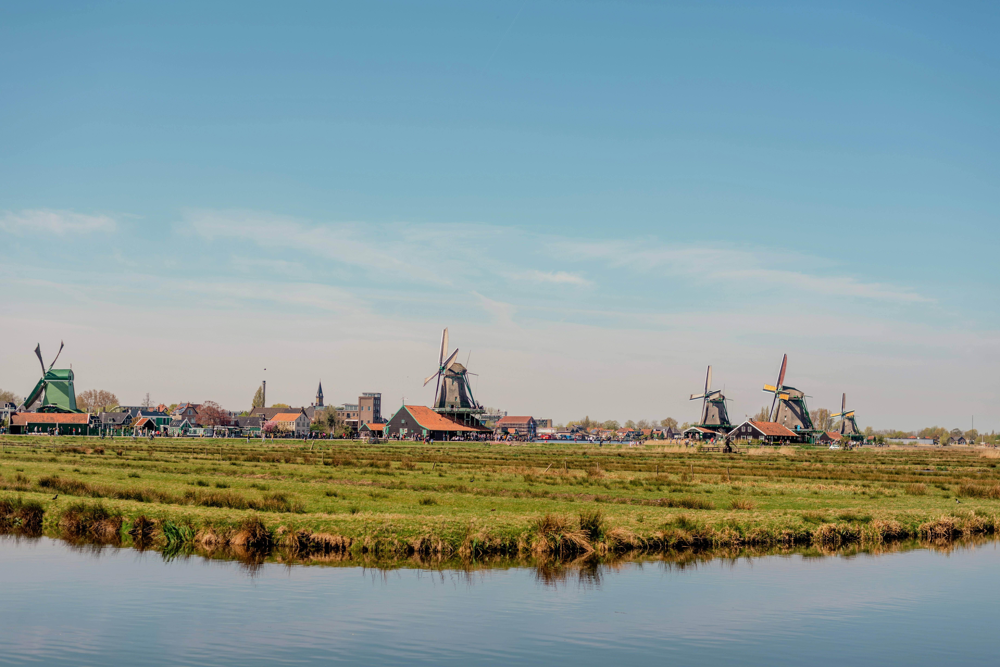

Welcome to AquaLens: Water Data Visualizations
Explore interactive charts and maps that reveal key insights about the world's freshwater resources. These visualizations help explain how water quality and access affect people’s health, the environment, and communities around the globe.
What You’ll Find
This page brings together global data from sources like the WHO, UNICEF, and other environmental agencies. You’ll see visual stories about clean drinking water, water stress, pollution, and how different countries manage water. Whether you’re a student, a policymaker, or just curious — these visuals are designed to make complex water issues easy to understand. The data is shown in five different categories: General Water Quality and Availability , Chemical Indicators, Ecological, Health Impacts, and Data Reporting and Transperency.
💡 You can click on any of the bold category names above to jump straight to that section or explore related data stories.
General Water Quality and Availability

Percentage of Good Quality Water Bodies
Global data on country' water quality

Global Water Stress
Map visualizing water stress felt globally in 2022

Countries with Highest and Lowest Water Stress (%)
Countries with highest and lowest water stress felt between 2016 - 2022

What Drives Water Stress? Insights From Random Forest Machine Learning Model
Explore the factors that help predicting water stress, countries that are most vulnerable, and what this means for policy.

Global Water Use Efficiency (US$/m³)
Map visualizing global water use efficiency in 2022

Access to Drinking Water based on Wealth - Poorest
Access to Drinking Water based on Wealth
Chemical Indicators

Average pH Levels
Visualizing global pH values by country.

Oxygen Demand Map
Average biological oxygen demand in water bodies.

Oxidized Nitrogen Map
Average nitrate levels across countries, indicating nutrient pollution intensity.

Nitrogen vs Oxygen Scatter
Shows the relationship between oxidized nitrogen and oxygen demand across countries.
Forecast: Nitrogen & Oxygen Demand
Long-term projections of nutrient pollution and organic demand through 2030.
Ecological

Heatmap with Vulnerable Marine Ecosystems (VME) in the Notheast Atlantic Ocean
Presence of VME and its indicators (e.g. sponge, corals) in the Northeast Atlantic Ocean

Concentration of Properties Found in GW in The Netherlands
Visualizes historical data of properties (i.e. Ammonium, Nitrate) found in GW bodies in The Netherlands.
Health Impacts
Basic Water vs Basic Cleanliness in Healthcare Facilities
This scatter plot shows a positive trend

Forecast: Diarrheal Death Rate
Projected global death rates from diarrheal diseases through 2030.
Data Reporting & Transparency
Water Reporting Transparency
Shows how consistently countries publish water safety data based on WHO/GLAAS.